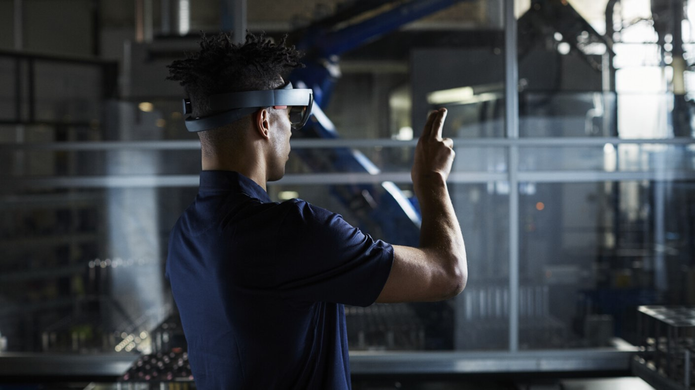

Internet of things and the future
Links:
The future of IoT has the potential to be limitless. Advances to the industrial internet will be accelerated through increased network agility, integrated artificial intelligence (AI) and the capacity to deploy, automate, orchestrate and secure diverse use cases at hyperscale. The potential is not just in enabling billions of devices simultaneously but leveraging the huge volumes of actionable data which can automate diverse business processes. As networks and IoT platforms evolve to overcome these challenges, through increased capacity and AI, service providers will edge furthermore into IT and web scale markets – opening entire new streams of revenue.
An exciting wave of future IoT applications will emerge, brought to life through intuitive human to machine interactivity. Human 4.0 will allow humans to interact in real time over great distances – both with each other and with machines – and have similar sensory experiences to those that they experience locally. This will enable new opportunities within remote learning, surgery and repair. Immersive mixed reality applications have the potential to become the next platform after mobile – realized through 3D audio and haptic sensations and becoming our main interface to the real world. Bringing future IoT to life will require close synergy between the IoT- and network platforms. This continues to be a key focus area of Ericsson research.
Untangling Industrial IoT networking:

Industrial IoT (IIoT) systems are rapidly growing larger, more distributed and gaining new capabilities. Similarly, the diversity of IoT applications will result in diversity in networking needs. Our Mobility Report forecasts 20 billion connected IoT devices by 2023, which will bring scale to the equation too. IIoT system designers and network engineers need to consider many different aspects when designing industrial networking systems. This includes the choice of networking technologies, that will lead to a successful network deployment.
Networking technologies are plentiful in the industrial domain. What is missing is guidance for network solutions architects across industry sectors to make the right choices, and that is what we have begun in the Industrial Internet Consortium (IIC).
The Industrial Internet Consortium is one of the world’s leading organizations which aims to transform business and society by accelerating the Industrial Internet of Things (IIoT). Together our goal is to deliver a trustworthy IIoT in which the world’s systems and devices are securely connected and controlled to deliver transformational outcomes.
The nature of industrial networking deployments:
Industrial networking is very different than networking for consumers or enterprises. The requirements from applications on the supporting networks are very diverse and can span many different industry sectors such as utilities, transportation, manufacturing and healthcare. Technical requirements can range from relaxed to highly demanding.
Deployment scenarios will also vary. The physical conditions found in mining differ greatly compared to those found in agriculture. Operational factors to consider are if connected machinery will be moving, like with robots, or require reconfigurability, such as with adaptable manufacturing cells. The lifecycle of deployments, which can be decades, must also be considered in a sustainable technology strategy.
Technology never stops to evolve:
Industrial networking infrastructures and the technologies supporting them are continuously evolving. As new technologies are introduced, network capabilities grow and enable industrial assets, such as machines, sites and environments, to connect to professionals and enterprises supporting these diverse applications across a wide range of industry sectors.
Industrial networking technologies provide the foundation for applications enabling the digitalization of industries that target increases in, for example, productivity and profitability. There is a wealth of choices in technologies, including different variants of fieldbuses, industrial ethernet and the IEEE family of wireless, like WiFi and 802.15.4. Cellular technologies in particular are rapidly evolving to support a vast range of IoT use cases, both within 4G/LTE, like NB-IoT for massive deployments with relaxed requirements and with 5G NR that can target mission critical application that require ultra-reliable low latency communication (URLLC). 5G is, in a sense, unique as it can support a range of different applications and deployment scenarios within the same system solution.